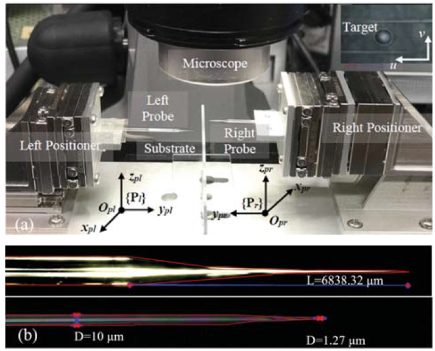
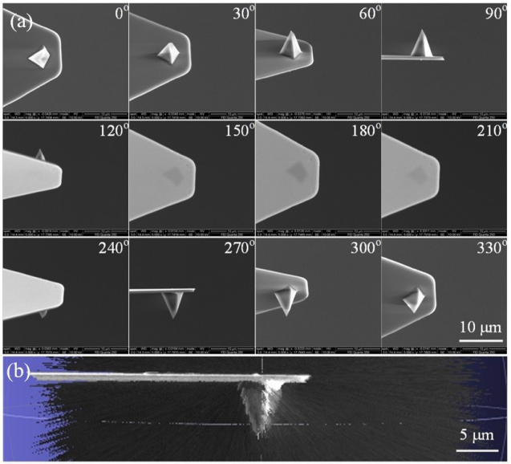
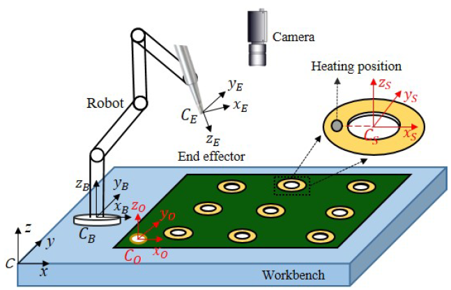
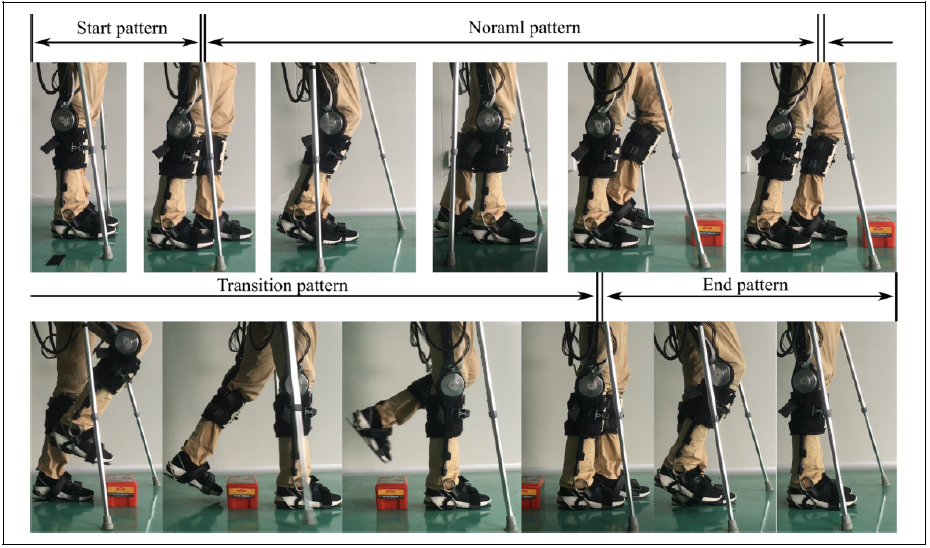
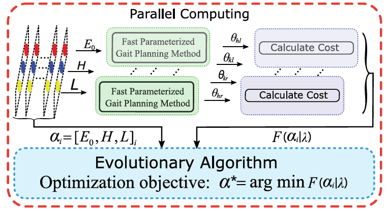
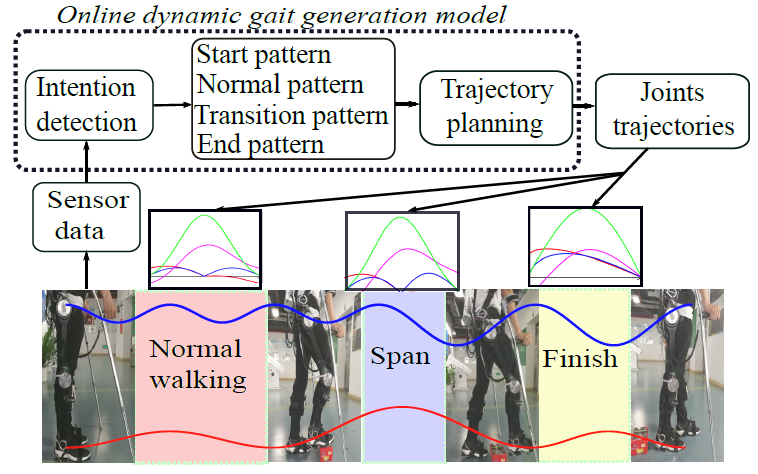
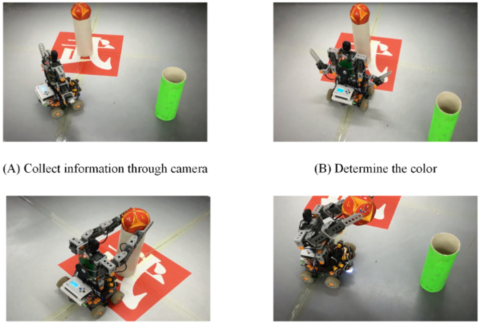

Hao RenEmail: renhao_hnu@163.comPhone: (86) 157-0075-8956 |
|
University of Chinese Academy of Sciences
Master in Control Engineering
Sep, 2018-July, 2020 (Expected)
GPA: 3.72/4.0 Ranking: TOP 2% Supervisor: Xinyu Wu
Hunan University
Bachelor in Electrical Engineering and Automation
Sep, 2014-Jun, 2018
GPA: 3.66/4.0 (Overall) & 3.71/4.0 (Compulsory) Ranking: 6/236
| National Scholarship in China (2%), 2020 & 2016 |
| The president scholarship of SIAT, CAS (Chinese Academy of Sciences) (1%) , 2019 |
| Second Prize, World Robot Contes , 2017 |
| National First Prize, National Second Prize, China Robot Competition, 2016 & 2017 |
| Third Prize, Undergraduate Physics Tournament, 2015. |
|  | Dual Rotating Microsphere Using Robotic Feedforward Compensation Control of Cooperative
Flexible Micropipettes. Wanfeng Shang (Supervisor), Hao Ren, Mingjian Zhu, Tiantian Xu, Xinyu Wu. IEEE Transactions on Automation Science and Engineering (IEEE TASE), 2020. |
|  | Centering of a Miniature Rotation Robot for Multi-Directional Imaging Under Microscopy. Wanfeng Shang (Supervisor), Mingjian Zhu, Hao Ren, Xinyu Wu. IEEE Transactions on Nanotechnology (IEEE TNAO), 2020. |
|  | Robotic Micromanipulation for Active Pin Alignment in Electronic Soldering Industry. Hao Ren, Wanfeng Shang, Niannian Li, Yong He, Zefeng Yan, Xinyu Wu. IEEE International Conference on Robotics and Automation (ICRA), 2021. |
|  | A fast parameterized gait planning method for a lower-limb exoskeleton robot. Hao Ren, Wanfeng Shang, Niannian Li, Xinyu Wu. International Journal of Advanced Robotic Systems (IJARS), 2020. |
|  | Multi-objective Gait Optimization of Lower-limb Exoskeleton Robot. Hao Ren, Wanfeng Shang, Niannian Li, Xinyu Wu. IEEE International Conference on Realtime Computing and Robotics (RCAR), 2020. |
|  | On-line Dynamic Gait Generation Model for Wearable Robot with User's Motion Intention. Hao Ren, Du-Xin Liu, Niannian Li, Yong He, Zefeng Yan, Xinyu Wu. IEEE International Conference on Information and Automation (ICIA), 2018. |
|  | The Modular Design and Production of an Intelligent Robot Based on a Closed-Loop Control Strategy. Libo Zhang, Junjie Zhu, Hao Ren, Dongdong Liu, Dan Meng, Yanjun Wu, Tiejian Luo. IEEE International Conference on Information and Automation (JOVE), 2017. |
Student Leader: Organize and train new members to participate in student competitions, including China Electronic Design Competition, Robot Competition, Smart Car competition and Engineering Ability Competition (Led the team to obtain more than 20 national and provincial awards).
| Programming: python, C, C++, LaTeX |
| Algorithm Framework: OpenCV, Tensorflow, Reinforcement learning algorithm |
| EDA: Altium Desinger, Multism, STM32, Arduino |